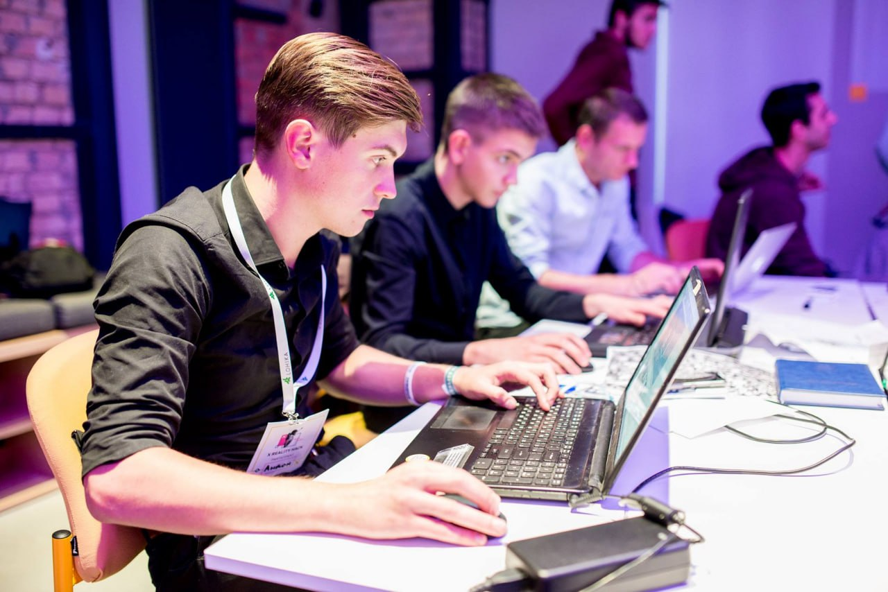
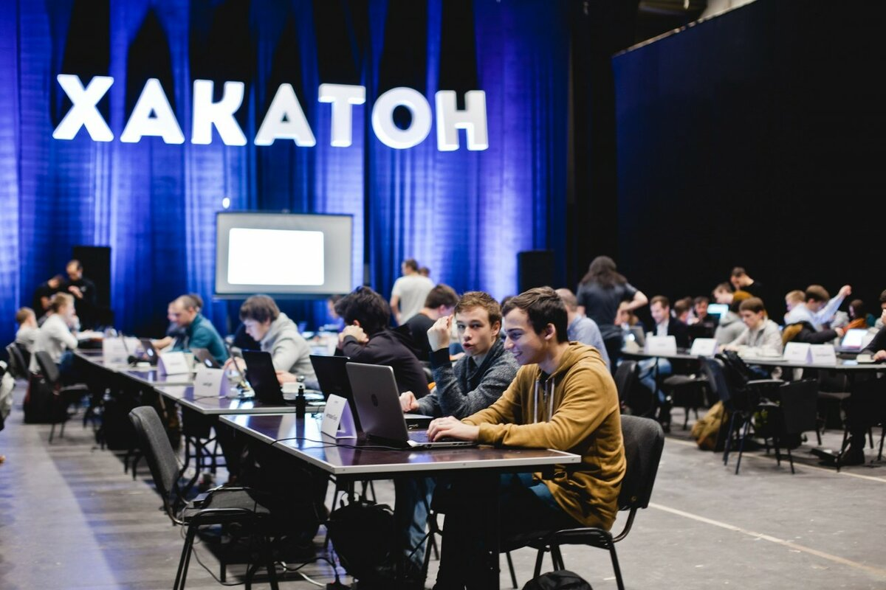
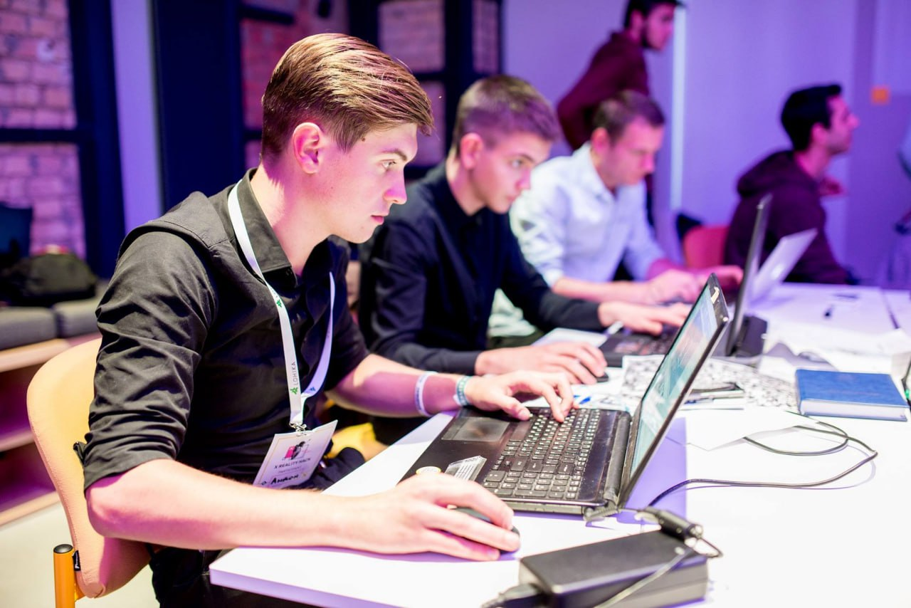
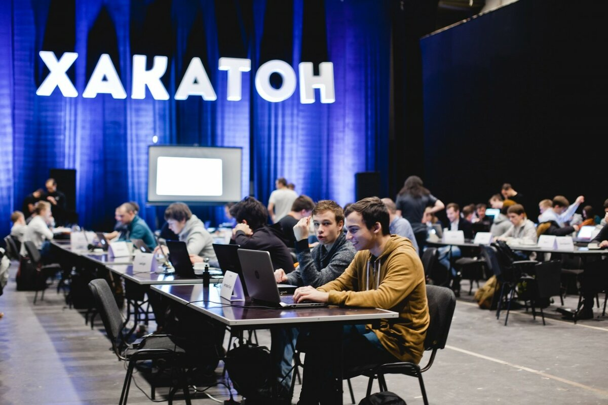

Место проведения: Учебный корпус Б, Институт Высшая ИТ-школа
1. Общая информация
Ежегодный хакатон-фестиваль — это платформа для студентов, заинтересованных в создании инновационных ИТ-проектов. Мероприятие объединяет разработчиков, дизайнеров, аналитиков и менеджеров проектов, давая им возможность продемонстрировать свои навыки, получить опыт командной работы и воплотить свои идеи в жизнь.
2. Тематика фестиваля
Тематика фестиваля — «Умный университет будущего». Участники создают ИТ-решения, направленные на улучшение цифровой среды университета: интерактивные платформы, чат-боты, системы аналитики, инструменты для студентов и преподавателей.
3. Формат участия
Участники проходят регистрацию на онлайн-платформе фестиваля, указывают свои компетенции (разработка, дизайн, аналитика, управление проектами). После регистрации формируются команды из 3–5 человек, в которых распределяются роли. Каждая команда выбирает одно из предложенных заданий или разрабатывает собственный проект в рамках темы фестиваля.
4. Этапы проведения хакатона Этап 1. Регистрация и формирование команд (1 неделя)
Открытие онлайн-регистрации на платформе
Создание профилей участников и команд
Ознакомление с правилами и кейсами фестиваля
Этап 2. Идея и концепция проекта (2 дня)
Разработка идеи, описание проблемы и решения
Презентация концепции и получение обратной связи от менторов
Этап 3. Разработка прототипа (1 неделя)
Реализация MVP или функционального демо-продукта
Поддержка со стороны технических консультантов
Этап 4. Финальная защита (1 день)
Презентация проекта перед жюри
Демонстрация прототипа
Обсуждение перспектив развития решения
5. Мероприятия, которые могут быть включены в фестиваль
Лекции и мастер-классы от IT-специалистов и предпринимателей
Наставнические сессии с экспертами
6. Награды и призы
Главный приз — грант на развитие проекта (100 000 рублей)
 Высшая
Высшая 


